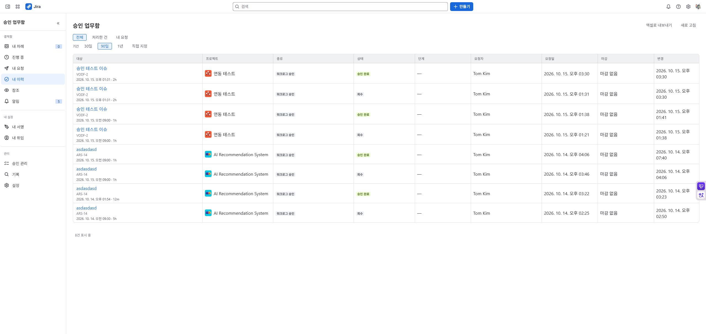

승인자 가이드
- 앱 → Moves Approval → 내 차례에서 요청을 엽니다.
- 요청 종류·작성자·이슈·작업 시작 일시·소요 시간·사유와 결재선을 확인합니다.
- 승인 또는 반려를 선택합니다. 정책에서 요구하면 반려 사유와 서명 PIN을 입력합니다.
- 결정 결과를 확인합니다. 상태 변경 요청은 승인 상태와 Jira 적용 결과를 따로 읽습니다.
권한·마감·다른 승인자의 결정이 달라지면 오래 열린 화면의 동작이 거부될 수 있습니다. 새로고침 후 현재 상태를 확인하세요. 참조자로 지정된 것만으로 결정 권한이 생기지는 않습니다.
일괄 처리
내 차례인 요청을 선택해 일괄 승인할 수 있습니다. 각 요청은 실행 시 개별 검증합니다. 10건 중 8건 성공·2건 실패라면 성공한 8건을 반복 처리하지 말고 실패한 2건의 원인을 확인합니다.
이력·서명·위임
내 이력에서 처리 결과를 확인하고, 제공되는 엑셀 내보내기와 결재 증명서를 사용할 수 있습니다. 다운로드 파일은 조직의 보관 정책에 따라 관리하세요.
서명·PIN·위임은 관리자가 허용한 기능만 사용합니다. 위임 기간 중에도 실제 처리자가 기록되며 Jira 열람 권한은 별도로 필요합니다. PIN과 서명 이미지를 다른 사용자에게 공유하지 마세요.
문서 홈 · English
